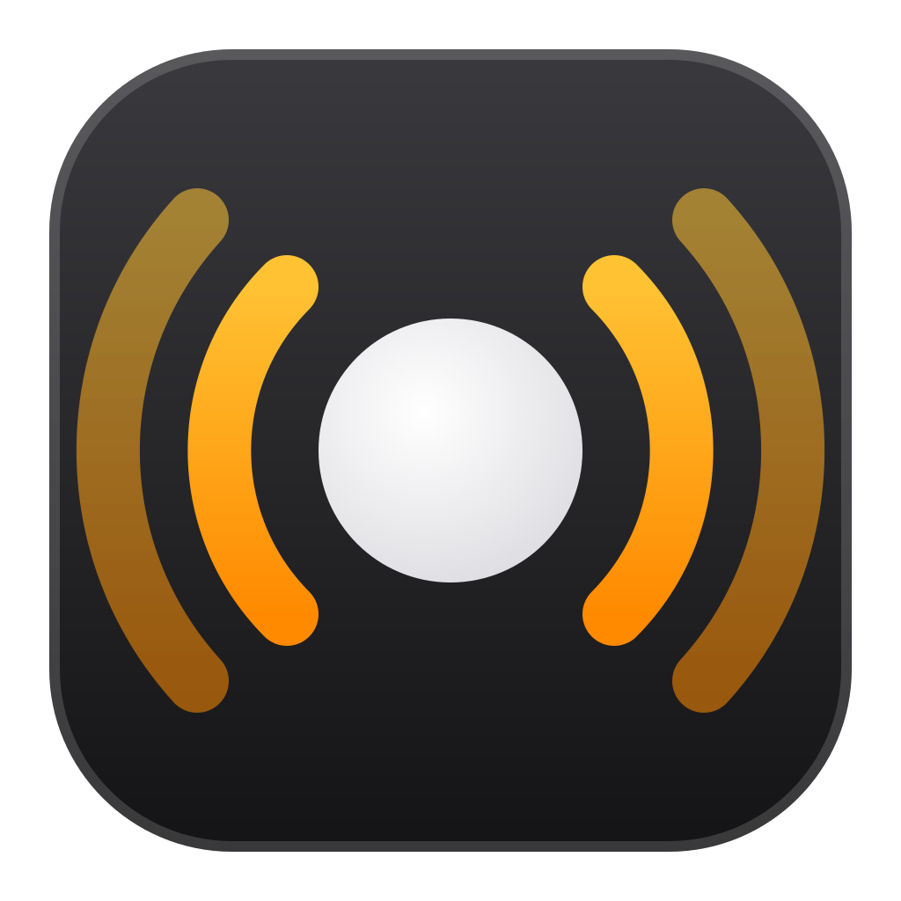

1
单声道Mono
一台放全部声音
One speaker plays everything

HomePod Cast电脑上播放的任何声音——音乐、视频、网页——同步送到 1、2 或 4 台 HomePod。
Anything your PC plays — music, video, the web — streamed to 1, 2 or 4 HomePods, in sync.
可以点点看：切换布局、点 ♪、开始串流。这是网页上的演示，不会发出声音。
Try it: switch layouts, tap ♪, start streaming. This is a demo on the page — it makes no sound.
布局Layouts
一台放全部声音
One speaker plays everything
左右分开，声场更宽
Left and right, a wider stage
前后环绕，多台同步
Front and rear, all in sync
* 独立的后置声道需要把 Windows 输出设备配置成 5.1 或 7.1。音源是立体声时，后置会重复前置。
* Separate rear channels need a 5.1 or 7.1 Windows output device. With a stereo source the rear speakers repeat the front ones.
上手Get started
单个文件，无需安装、账号或驱动。
A single file. No install, account or driver.
分不清哪台是哪台？点 ♪ 让那台音箱响一声。
Not sure which is which? ♪ plays a short test sound on that speaker.
电脑播放的任何声音都会从 HomePod 里出来。
Anything your PC plays comes out of the HomePods.
圆点变绿 = 已同步Green dot = in sync
延迟按 Wi‑Fi 状况自动调节。听歌、看剧、看视频没问题，不适合打游戏。
Latency adapts to your Wi‑Fi. Fine for music and video, too slow for games.
所有音箱跟随同一个时钟。
Every speaker follows the same clock.
让某一台 HomePod 响一声，串流前、串流中都能用。
Plays a short sound on one HomePod, before or while streaming.
界面语言随时切换。
Switch the interface language at any time.
窗口跟随 Windows 的浅色或深色模式。
The window follows the Windows light or dark mode.
MIT 许可，源码在 GitHub。
MIT licensed, source on GitHub.
使用须知Good to know